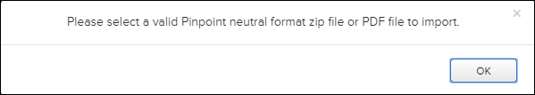

Not applicable for Pinpoint Standalone Light.
- PDF file
You can select a single PDF file to import the file directly into the specified library in Pinpoint. If a PDF file exists with the same name, Pinpoint replaces the existing one.
- Pinpoint Neutral Package (ZIP file)
A Pinpoint Neutral Package is a ZIP containing HTML and images needed for Pinpoint to render a publication. You can export this type of package manually from Data Manager using the Download Revision function in the Revision pane. This will contain an importInformation.json file as well as the Pinpoint Neutral Package for the exported revision. By importing this into a Data Manager, you can recreate the same library structure for the revision including the same names and IDs for libraries, publication, and revision.
You can also download a complete library in Data Manager. This creates a ZIP file that contains the latest FULL revision and all subsequent INCREMENTAL revisions. You can import this ZIP file into Pinpoint or Pinpoint Standalone. Refer to the Flatirons Data Manager User Guide for the required steps to download a library.
Note: You can only import FULL revision ZIP packages for a single revision import. The ZIP file created when you download a complete library allows you to import the latest FULL revision and any subsequent INCREMENTAL revisions.
If you select a file type other than a ZIP or PDF, an error message appears:

To import a Pinpoint Neutral package or PDF file, do these steps:
-
Click the Import Data Package
 icon in the Action Bar.
Note: The Import Data Package icon can be located in the More drop-down menu if your page width is less than or equal to 1280 pixels.The file selector window appears.
icon in the Action Bar.
Note: The Import Data Package icon can be located in the More drop-down menu if your page width is less than or equal to 1280 pixels.The file selector window appears.